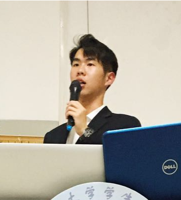

Zichang He's Homepage
|  | PhD candidate |
About Me
I am a PhD candidate in Electrical and Computer Engineering under the supervision of Prof. Zheng Zhang. Working on Design Automation, Machine Learning, and Quantum Computing.
 |
|
News
Oct. 2022: The QuYBE compiler (exact circuit compression for dynamics simulation) is published
Sept. 2022: Gave a talk about ML-assisted quantum simulation in IEEE Quantum Week Advanced Simulations of Quantum Computations workshop
Aug. 2022: Paper about tensor network contraction for quantum simulation was accepted by IEEE HPEC’22. Won the Best Student Paper Award
Jul. 2022: Passed the PhD qualify exam. Thanks to my great PhD committee!
Apr. 2022: Will work as a research associate intern in quantum computing at JPMorgan FLARE this summer
Apr. 2022: Paper about active tensor sampling for medical imaging is accepted by EMBC’22
Dec. 2021: Won the Best Research Video Award at the DAC 2021 Young Fellows Program
Dec. 2021: Paper about chance-constrained yield optimization is accepted by IEEE TCAD
Sept. 2021: Excited to begin an intern journey in quantum simulation at KBR with NASA Quantum AI lab
Aug. 2021: Honored to recieve the 2021-2022 IEE Excellent in Research Fellowship (One recipient in IEE annually) [link]
Jun. 2021: An invited paper about high-dimensional uncertainty quantification of classical circuits is accepted by IEEE TCPMT
Jun. 2021: Recieved the Outstanding Teaching Assistant award in the department of ECE for the second time
Oct. 2020: Received the Best Student Paper award in IEEE EPEPS 2020
May. 2020: Received the Outstanding Teaching Assistant award (two recipients in the department annually)
Jun. 2019: One paper got accepted by ICCAD’19 (Acceptance rate = 23.8%)
Selected Honors & Awards
2022: Best Student Paper award in IEEE HPEC 2022
2021: DAC Young Student Fellow, Best Research Video Award
2021: IEE Excellent in Research Fellowship (One recipient annually in IEE, UCSB) [link]
2021, 2020: Outstanding Teaching Assistant award in the department of ECE, UCSB
2020: Best Student Paper award in IEEE EPEPS 2020
2018: Graduate Fellowship in the department of ECE, UCSB
2016: Meritorious Winner in Interdisciplinary Contest in Modeling (awarded by COMAP)